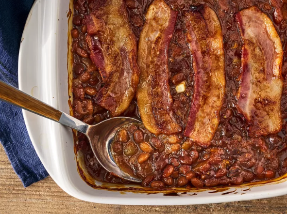

Ingredients
- 2 (15 ounce) cans baked beans with pork
- ½ cup packed brown sugar
- ½ medium onion, chopped
- ½ cup ketchup
- 1 tablespoon prepared mustard
- 1 teaspoon Worcestershire sauce
- 1 teaspoon red wine vinegar
- salt and pepper to taste
- 2 slices bacon